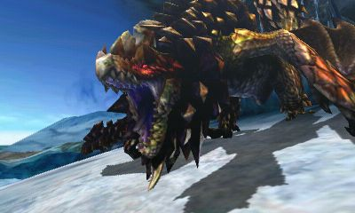

Monster Hunter 4 Ultimate

Game Details
- Release year: 2015
- Genre: Action Rpg
- Platforms : Nintendo 3ds
- Developer : Capcom
The Beauty of Monster Hunter 4 Ultimate
Every Monster Hunter game (from now on, I'm going to abbreviate it as MH) has its own unique mechanics, and everyone I know likes to argue about which one is the best.
Many people will say "World is the best", while others will argue "No, Freedom Unite is the best". The reality is that you have to separate two different eras of MH: the old-school MH and the new generation of the series.
MH4U represents the peak of the old-school era.
Its atmosphere is unmatched, it has the best story in the series, and it makes you feel part of a long journey.
The amount of content is almost unlimited, thanks to the Guild Quest system and its impressive monster roster.
You are going to fear Furious Rajang. Trust me.